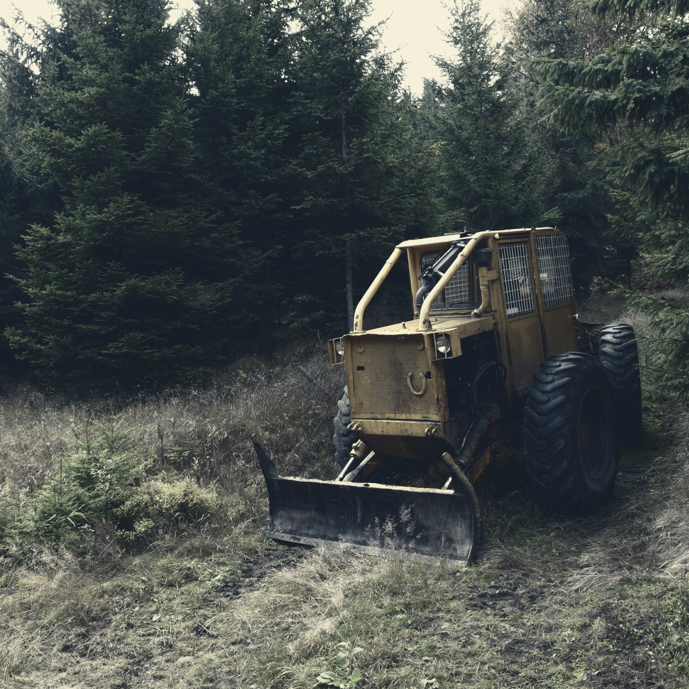
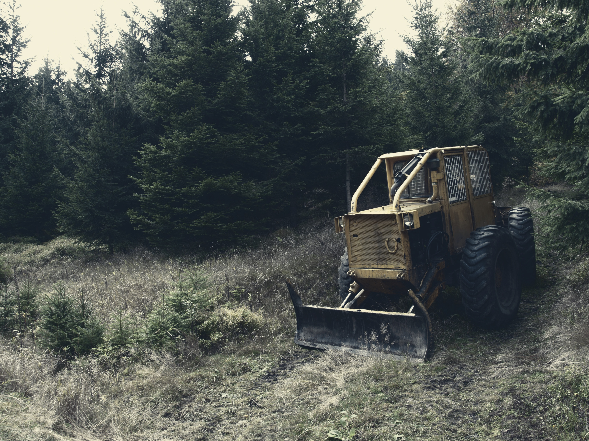

Tendencia preocupante que va en aumento
Desde el año 2000, Chile está perdiendo en promedio 30,000 hectáreas anuales de bosque nativo. Un estudio realizado en 2016 por investigadores forestales de la Universidad de la Frontera, apunta que si las tendencias continúan en esta región, podría provocar la deforestación completa de las zonas fuera de las áreas protegidas.
Más información y datos relacionados a la pérdida de bosque nativo en https://www.conaf.cl/incendios-forestales/incendios-forestales-en-chile/estadisticas-historicas/ o en https://laderasur.com/articulo/bosques-chilenos-y-la-importancia-de-protegerlos/